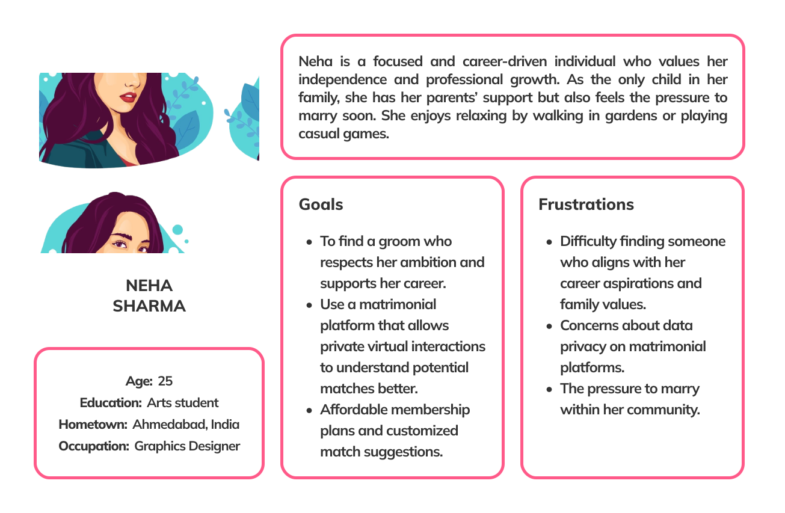

overview
Down to Aisle is an innovative web platform designed to simplify the process of finding the perfect match for marriage. Unlike traditional portals, it offers unique features such as real-time chatting and virtual meetings, providing users with a seamless and convenient experience. With a focus on hassle-free arrangements, Down to Aisle ensures users across India can connect and plan their journey toward marriage with ease and confidence.
Team Members
None
Duration
4.5 Months
Goal Statement
Down to Aisle is a Web and Mobile application designed to generate connections between people who are interested in inter or intra cast marriage.
My Role
- User Experience Researcher: Conducted interviews, surveys, and pain-point analysis.
- User Experience Designer: Designed lo-fi prototypes and conducted usability testing to refine designs.
- User Interface Designer: Created high-fidelity mockups and iterated designs based on feedback.
- Interaction Designer: Developed interaction guidelines and researched user-technology dynamics to inform design.
Background
In today's fast-paced world, balancing responsibilities often leaves little time for managing essential tasks like finding the perfect life partner. With time and resources in short supply, leveraging information technology has become more than a convenience—it's a necessity for streamlining matrimonial services.
Down to Aisle bridges this gap by offering a comprehensive web portal tailored to meet the diverse needs of users. Whether you're a prospective bride or groom, a concerned parent, or a trusted vendor, this platform provides a seamless experience. Users can effortlessly register, explore potential matches, and connect with a variety of service providers.
Through an intuitive interface, visitors can access both static and dynamic content, offering a wealth of relevant and essential information. By combining innovation with accessibility, Down to Aisle transforms the traditionally complex process of marriage arrangements into a simple, efficient, and enjoyable journey for all.

The Process

Research
- Understanding the problem
- Gathering insights
- Goals and Requirements
Ideation
- Conceptualizing solutions
- Crazy Eights
- Narrowing scope

Usability Testing
- Gaining user perspective
- Re-evaluating solution based on feedback

Design & Prototype
- Interface Designing
- Creating interactive prototypes
Research
As this project was part of a course from the Google Certification, the focus was on User Experience and User Interface Design. Hence, the deadline was only one week to conduct research. As the user group was from 18-51 years old, we wanted to understand their problems that were faced due to COVID-19 Pendemic.
Competitive Analysis
Reviewed popular matrimony platforms to identify design patterns.
Personas
Persona 1 : Neha Sharma (The Career-Oriented Match Seeker)

Persona 2: Ritu Mehta (The Family-Oriented Decision Maker)
Main Findings
COVID-19 Pandemic
Feel Shy
Expectations
Price
User Journey Map
Ideation
In the Ideation phase, I focused on integrating the design requirements into the preliminary version of Down to Aisle. I then built wireframes and paper prototypes to be tested out by users.
Story Board
Mahek Mehra's Journey
Mahek Mehra is an independent and determined woman ready to find her life partner. However, the COVID-19 pandemic and lockdowns have made traditional matchmaking difficult, prompting her to turn to online platforms. She is clear about her preferences—seeking a partner from her caste and community while ensuring compatibility and shared values. For Mahek, privacy is non-negotiable, and she prefers a platform that keeps her personal details secure until a suitable match is found.
Once matched, Mahek values the opportunity to connect through private chats, followed by virtual meetings to build a deeper understanding. By leveraging technology, she hopes to navigate these challenges and find a meaningful connection that aligns with her expectations and aspirations.

Design Architecture
Starting the design
(Mobile View)
Wireframes and Paper Prototypes
Utilizing the Site Map and combining the vision from the storyboards I was able to identify three key user flows. Combining this knowledge with the Interface Sketches, I transformed these user pathways into paper prototypes.
Low Fidelity
Using the completed set of digital wireframes, I created a low-fidelity prototype. Developed initial prototypes to visualize and test core user flows, focusing on functionality and structure. These prototypes facilitated early-stage feedback and iterative improvements, ensuring the designs aligned with user needs and project goals.
Visual Design
Style Guide
The visual system needed to be clean and simple due to the large amounts of textual information present. I went with Mulish as the font. The headings were differentiated using font weight.
The iconography consisted of rounded edge symbols that helped with the readability. As previously stated, I had to iterate on the icons based on user feedback to clarify what I was trying to say with them.
Typography
Logo
Colors


Usability Testing
To ensure the platform truly met user needs, I conducted a round of usability testing, focusing on gathering actionable feedback to refine the design. This process was critical for identifying and addressing preconceived biases that may have emerged during the research and ideation phases. By listening directly to users, I aimed to create a product that resonates with their expectations and improves their overall experience.
The study utilized guerrilla testing, a fast and cost-effective method to gain insights. Conducted over a span of three days in India, the testing involved three participants representing the target user base. Each participant was asked to navigate the platform, complete key tasks, and share their impressions. Their feedback highlighted usability challenges and areas for improvement, enabling me to iterate and enhance the designs for better functionality and user satisfaction.
This iterative approach ensured the design was rooted in real user behavior and expectations, resulting in a more intuitive and user-friendly platform.
Change background in Spash Screen

Neumorphism design changed to Flat UI and Card redesigned
Study Type
Guerilla Testing
Location
India
Participants
3
Length
3 Days
Matrices of Usability Testing
1. Success Rate
What it measures: The percentage of tasks users successfully complete without assistance.
Why it's important: It provides a clear indication of how intuitive and functional your design is.
Example: If 4 out of 5 participants can complete the "Create Account" task, the success rate is 80%.
2. Time on Task
What it measures: The amount of time users take to complete a specific task.
Why it's important: Shorter task times generally indicate better usability, as users can achieve their goals more efficiently.
Example: If it takes an average of 2 minutes to find and view a potential match, it shows an efficient flow.
3. Error Rate
What it measures: The number of mistakes users make while attempting to complete tasks.
Why it's important: High error rates can indicate confusing navigation, unclear instructions, or poor design choices.
Example: If users frequently click the wrong button when submitting a registration form, it highlights an issue with the button placement or labeling.
4. User Satisfaction (Likert Scale)
What it measures: How users feel about the platform's ease of use and overall experience, typically rated on a 1–5 scale.
Why it's important: Captures subjective user opinions, providing valuable insights into how users perceive the design.
Example: Asking, "How easy was it to find a match on the platform?" with 1 being "very difficult" and 5 being "very easy."
Reflection
1. Feedback
- Learning to distinguish good and bad feedback.
- I can receive contradictory feedback, in which case I have to evaluate opportunity cost.
- I don't have to implement every piece of feedback I receive. It has to cater to the scope of my project and problem statement.
2. Improvements
- I would expand my user group to people other than hindu religion, from all phases of project.
- I learned a lot from usability testing, not asking leading questions, knowing when to prompt a participant, etc.
- Explore more design patterns and iterations of the final design